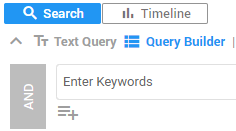

Activate Query Builder to simply construct complex search queries.

Other suggestions are W/5 (Within), P/5 (Precedes), ~2 (Fuzzy), () (Parentheses),
[0-9a-z]{3} (pattern), 2 OF {query1, query2, query3} (Quorum).
Tip: Select Parentheses and immediately start typing (cursor is automatically placed inside the brackets).
The AND/OR button is gray when not active (that is, not combined with another query).
- Select
 to add a subquery,
with a maximum of 7 levels for subqueries within subqueries. A subquery can be added to the highest/first level, or nested within subqueries.
to add a subquery,
with a maximum of 7 levels for subqueries within subqueries. A subquery can be added to the highest/first level, or nested within subqueries.
Note: You can add more than 7 subqueries to the highest level.
Current limitation: You cannot add Tags/Review Status queries to subqueries.
For another short video, see Keyword Search.
- Select
 to search Fields (metadata), Tags or the Review Status.
to search Fields (metadata), Tags or the Review Status. - Use the Home or End button to quickly scroll when filtering the fields.
- To search for documents with an assigned tag, select the tag:

- To search for documents without an assigned tag, select the tag:
 , then select NOT:
, then select NOT: 
- To search the Review Status, select Reviewed or Not Reviewed:

 to reuse your queries (for example, for defining the initial Training Set in Assisted Review) and/or share them (only with users/groups with the Access Matter permission). Note: All executed queries are saved in the History tab of Saved Searches. However, they cannot be shared or reused at another location.
to reuse your queries (for example, for defining the initial Training Set in Assisted Review) and/or share them (only with users/groups with the Access Matter permission). Note: All executed queries are saved in the History tab of Saved Searches. However, they cannot be shared or reused at another location.Yellow for Keyword Search, custom selected color for Keyword Highlighting, and pink for Search within a Document (Ctrl+F).
Use the arrows or Shortcut Keys to move forward and backward along the hits.